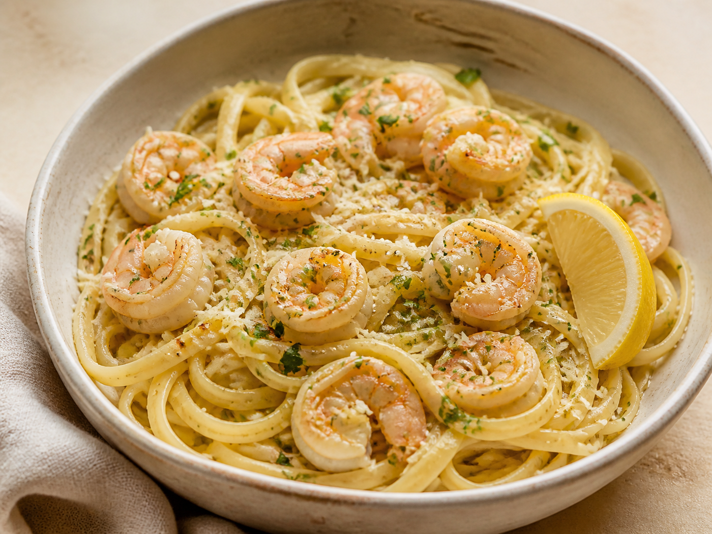

YC
Your personal restaurantMyMenu
Archived
Lemon Garlic Linguine is tucked away
It’s gone from Menu and Plan suggestions, but all 8 cooking memories are preserved.

History preservedRecipe · 3 notes · 8 sources
Archived
It’s gone from Menu and Plan suggestions, but all 8 cooking memories are preserved.
